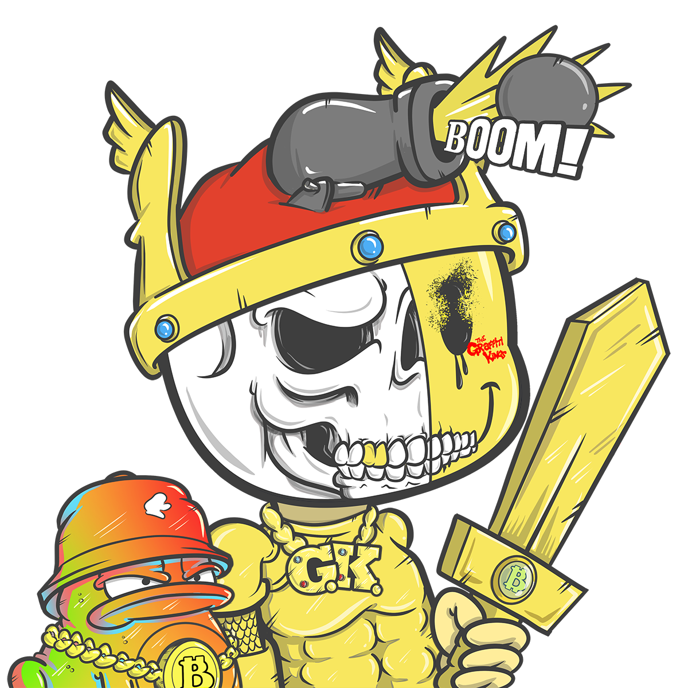

BIT-CAP 5000
Cap-wearing signal bot and market-memory mascot
| Archive Role | Mascot / market signal carrier |
| World Layer | Graffiti Kings / GKniftyHEADS / Crypto Moonboys |
| Canon Source | W81 Archive |
| Page Type | Long-form character lore profile |
Overview
Bit-Cap 5000 is a character shaped by crypto culture, mascot logic and archive humour. The name reads like a wearable object, a market phrase and a machine model at the same time. In the W81-style universe, that makes him useful as a bridge between streetwear identity, token culture and character comedy.
He should not be flattened into a joke page. Mascots matter in this universe because they make complex systems readable. A cap can be a crown, a team marker, a faction signal, a meme object, a merch asset and a lore relic all at once.
Mascot Function
Bit-Cap 5000's core function is to carry signal in a simple form. He can stand for wearable identity: the hat someone puts on before entering a crew, game, faction or collection. He can also act as a guide for market slang, holder mentality and the playful side of Web3 culture.
Because the Graffiti Kings / GKniftyHEADS universe combines serious lore with collectible identity, characters like Bit-Cap 5000 are valuable. They prevent the world from becoming too abstract. He gives the archive a way to talk about caps, traits, wearable symbols, market mood and faction style without writing dry documentation.
World Role
Inside Block Topia, Bit-Cap 5000 can work as a streetwear-coded signal bot, a market mascot, a cap relic, a trait guide or a faction-neutral commentator. He can appear in collection pages, merchandise pages, NFT trait explanations or game UI concepts.
The strongest use is as a character who understands how style becomes allegiance. In this world, a hat is not only a hat. It can show faction, history, collector status, joke, warning, rank or memory. Bit-Cap 5000 gives that idea a face.
Visual Language
The visual language should centre caps, pixel shine, market tickers, sticker-bomb surfaces, simple robot shapes and readable streetwear silhouettes. The character should be easy to print, use in UI and recognise in small form.
Future art should avoid overcomplicated cyber detail. A clean cap shape, bold eyes, simple body and strong graphic mark would make him more useful for wiki cards, sticker assets and collection traits.
Canon Boundary
This page is a W81-aligned foundation. It does not assert a specific token supply, trading strategy, financial advice role or market prediction ability. Bit-Cap 5000 is a character and archive device, not investment guidance.
Future additions should focus on lore, visual traits, holder culture, faction style and collection identity. Unsupported price claims, market promises and random robot lore should be removed.